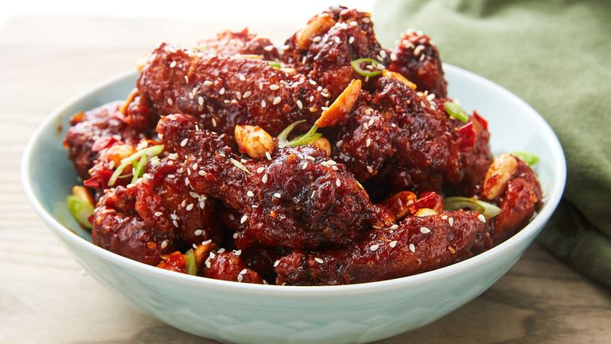

Recipe for June Xie's Korean Fried Chicken

Korean fried chicken is becoming increasingly popular throughout the world for taking fried chicken to another level! If you have not
had a chance to try it yet, now is the perfect opportunity for you to make some at home! This recipe will using a thick, sweet and spicy sauce
and will involve double frying the chicken for an extra crunchy exterior that you won't be able to forget for years to come! Recipe will yield 4
servings, require 15 minutes of prep time for a total cooking time of 1 hour.
Ingredients
- Vegetable oil
- 1 tsp. kosher salt
- 1/2 tsp. freshly ground black pepper
- 1/2 tsp. baking powder
- 1/2 tsp. garlic powder
- 2 lb. chicken wings
- 1 tbsp. freshly grated ginger
- 1/2 c. cornstarch
Directions
- Make wings: In a deep pot over medium-high heat, heat 4 to 6 cups vegetable oil to 275°. Line a large plate or baking sheet with paper towels. In a small bowl, combine salt, pepper, baking powder, and garlic powder.
- Pat wings dry with paper towels, then rub with grated ginger and season with salt mixture. In a large bowl, toss wings with cornstarch and squeeze to compress coating onto each wing.
- Carefully add wings to oil and fry until skin is just lightly crisped and golden, occasionally flipping with tongs, about 15 to 18 minutes. Remove wings from oil and set aside on prepared plate. Let rest briefly.
- Heat frying oil to 400°. Return wings to pot and fry again until deeply golden and skin is crisp and crunchy, about 7 to 8 minutes. Remove wings from oil and place in a large mixing bowl.
- Make sauce: In a medium saucepan over medium-low heat, add butter, dried chilis, ginger, and garlic and cook until fragrant, 2 minutes. Stir in gochujang, ketchup, vinegar, and soy sauce and cook until bubbling. Stir in honey and brown sugar and continue cooking until bubbling and slightly thickened.
- Pour sauce over wings and toss until evenly coated. Add in peanuts and toss to combine.
- Garnish with sesame seeds and green onion before serving.